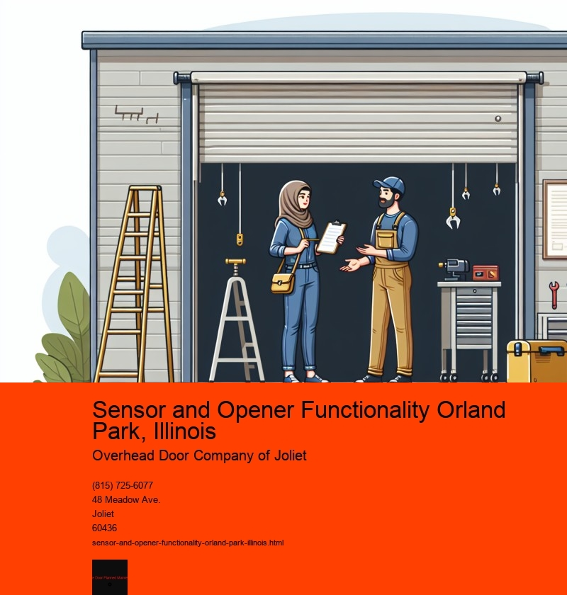

The Role of Sensor and Opener Functionality in Orland Park, Illinois
In the heart of Orland Park, Illinois, a community known for its blend of suburban charm and modern amenities, the integration of sensor and opener technology has become a hallmark of both residential and commercial spaces. As technology continues to evolve, these innovations have significantly enhanced the convenience, safety, and efficiency of everyday life for the residents of Orland Park.
Sensor and opener functionality refers to the use of technology that automates and streamlines the operation of doors, gates, and various other mechanisms. This technology is often equipped with motion sensors, remote controls, or smartphone connectivity, allowing for seamless and hands-free operation. In Orland Park, as in many other parts of the world, these systems are becoming increasingly popular due to the myriad of benefits they offer.
One of the primary advantages of sensor and opener functionality is the enhancement of security. In a community-focused area like Orland Park, where safety is a top priority, these technologies provide an added layer of protection. Automated gates and doors equipped with sensors can detect unauthorized access attempts and alert homeowners or business owners instantly. This not only deters potential intruders but also provides peace of mind to residents and business operators alike.
Moreover, the convenience offered by these technologies cannot be overstated. For instance, automatic garage door openers have become a staple in many Orland Park homes. These devices allow homeowners to open and close their garage doors with the push of a button, or even through voice commands via smart home systems. This is particularly beneficial during the harsh Illinois winters when manually operating a garage door can be cumbersome and uncomfortable.
In commercial settings, sensor and opener functionality is equally transformative. Retail stores and office buildings in Orland Park are increasingly adopting automatic doors to improve accessibility and streamline traffic flow. These doors ensure that customers and employees can enter and exit with ease, enhancing the overall experience and efficiency of the establishment. Additionally, such systems contribute to energy savings by minimizing the time doors remain open, thus reducing heating and cooling costs.
Environmental sustainability is another important aspect of sensor and opener technology. By optimizing the operation of doors and windows, these systems help in maintaining a consistent indoor climate, which is particularly crucial during the fluctuating weather conditions in Orland Park. This not only leads to energy savings but also reduces the carbon footprint of households and businesses, aligning with the growing emphasis on eco-friendly practices.
Furthermore, the integration of smart technology in sensor and opener systems has opened new avenues for customization and control. Residents of Orland Park now have the ability to monitor and operate their systems remotely, receiving real-time updates and notifications through their smartphones. This level of control allows for greater flexibility and responsiveness, ensuring that the technology adapts to the unique needs and preferences of each user.
In conclusion, the adoption of sensor and opener functionality in Orland Park, Illinois, represents a significant step forward in the integration of technology into daily life. These systems offer a range of benefits, from enhanced security and convenience to energy efficiency and environmental sustainability. As the community continues to embrace technological advancements, the role of sensor and opener technology will undoubtedly expand, further enriching the quality of life for the residents and businesses of Orland Park. Through these innovations, Orland Park is not only keeping pace with modern trends but is also setting an example of how technology can be harnessed to create safer, more efficient, and more comfortable living and working environments.
Testing Sensor Alignment Orland Park, Illinois
